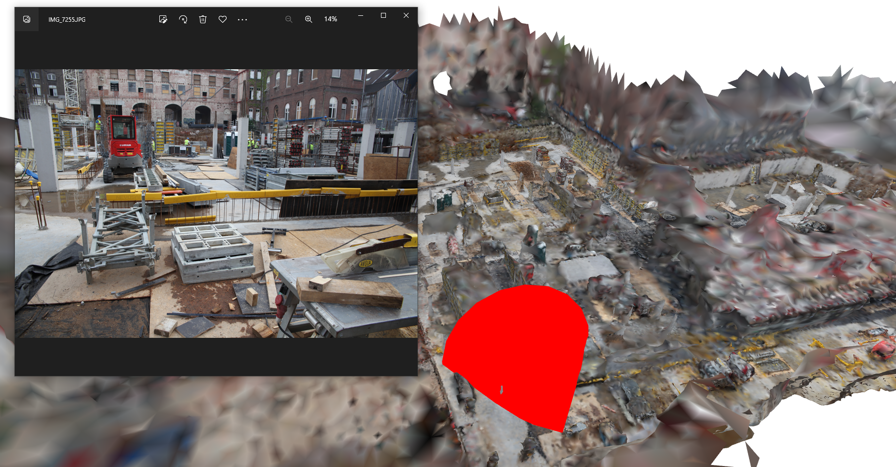
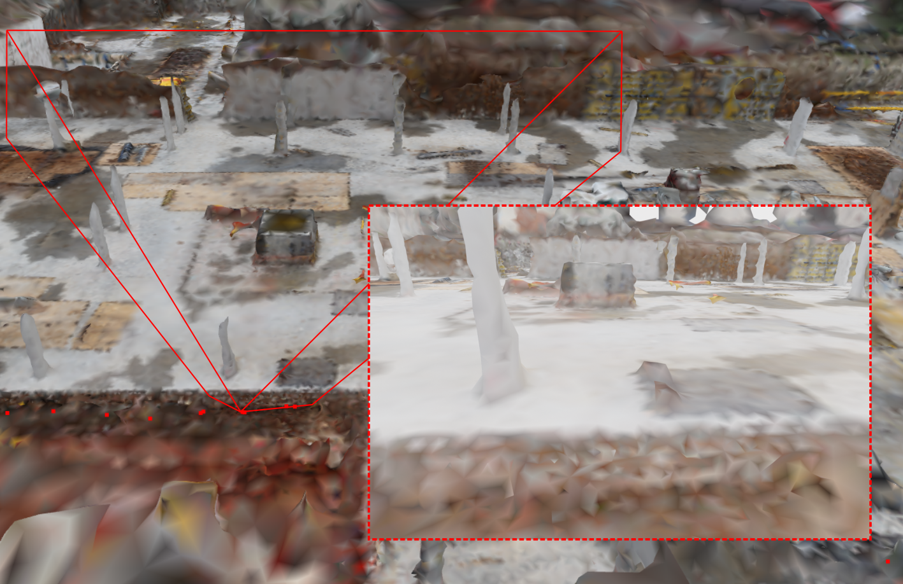
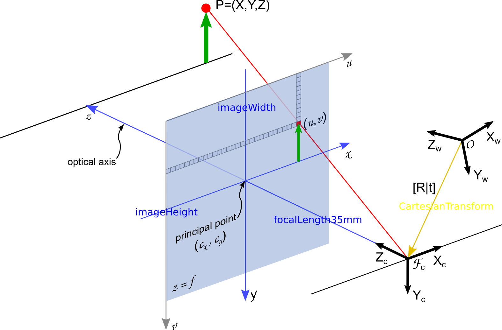
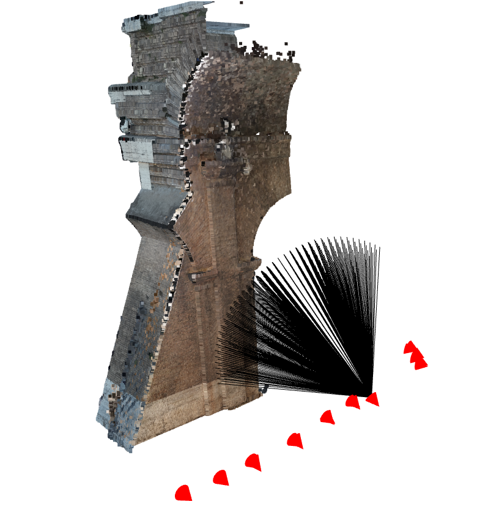

geomapi.nodes.imagenode
ImageNode is a Python Class to govern the data and metadata of image data (OpenCV, PIL).
This node builds upon the OpenCV and PIL API for the image definitions. It directly inherits from Node. Be sure to check the properties defined in the above classes to initialise the Node.
- class geomapi.nodes.imagenode.ImageNode(graph: rdflib.Graph = None, graphPath: str = None, subject: rdflib.URIRef = None, path: str = None, xmpPath: str = None, xmlPath: str = None, getResource: bool = False, getMetaData: bool = True, **kwargs)
Bases:
Node- __init__(graph: rdflib.Graph = None, graphPath: str = None, subject: rdflib.URIRef = None, path: str = None, xmpPath: str = None, xmlPath: str = None, getResource: bool = False, getMetaData: bool = True, **kwargs)
Creates a Node from one or more of the following inputs. By default, no data is imported in the Node to speed up processing. If you also want the data, call node.get_resource() or set getResource() to True.
Args:
graph (RDFlib Graph) : Graph with a single subject (if multiple subjects are present, only the first will be used to initialise the MeshNode)
graphPath (str): Graph file path with a single subject (if multiple subjects are present, only the first will be used to initialise the MeshNode)
path (str) : path to image file (Note that this node will also contain the data)
resource (ndarray, PIL Image,Open3D) : OpenCV, PIL (Note that this node will also contain the data)
xmlPath (str) : Xml file path from Agisoft Metashape
xmpPath (str) : xmp file path from RealityCapture
getResource (bool, optional= False): If True, the node will search for its physical resource on drive
getMetaData (bool, optional= True): If True, the node will attempt to extract metadata from the resource if present
- Returns:
An ImageNode with metadata
- property xmlPath
Get the xmlPath (str) of the node.
- property xmpPath
Get the xmpPath (str) of the node.
- property orientedBoundingBox
Get the orientedBoundingBox of the Node from various inputs.
- Args:
Open3D.geometry.OrientedBoundingBox
Open3D geometry
- Returns:
orientedBoundingBox (o3d.geometry.OrientedBoundingBox)
- set_resource(value)
Set the resource of the Node from various inputs.
- Args:
np.ndarray (OpenCV)
PIL Image
Open3D Image
- Raises:
ValueError: Resource must be np.ndarray (OpenCV), PIL Image or Open3D Image.
- get_resource() ndarray
Returns the resource (image) in the node. If none is present, it will search for the data on drive from the following inputs.
- Args:
self.path
self.graphPath
self.name or self.subject
- Returns:
np.ndarray or None
- get_path() str
Returns the full path of the resource. If none is present, it will search for the data on drive from the following inputs.
- Args:
self.graphPath
self.name
self.subject
- Returns:
resource path (str)
- get_xmp_path() str
Returns the xmpPath in the node. If none is present, it will search for the data on drive from the following inputs.
- Args:
self.graphPath
self.name
self.subject
- Returns:
str or None
- save_resource(directory: str = None, extension: str = '.png') bool
Export the resource of the Node.
- Args:
directory (str, optional): directory folder to store the data.
extension (str, optional): file extension. Defaults to ‘.png’.
- Raises:
ValueError: Unsuitable extension. Please check permitted extension types in utils._init_.
- Returns:
bool: return True if export was succesful
- get_oriented_bounding_box() open3d.geometry.OrientedBoundingBox
Gets the Open3D OrientedBoundingBox of the node from the conical mesh representation based on the cartesianTransform, the focal length at 35mm and a viewing range.
- Returns:
o3d.geometry.orientedBoundingBox
- get_image_features(featureType='Orb', max=1000) Tuple[array, array]
Get the keypoints and the descriptors of this Nodes Image resource
- Args:
featureType (str, optional): The featuretype to detect, use: orb, sift. Defaults to “Orb”. max (int, optional): The max features to detect. Defaults to 1000.
- Returns:
Tuple[np.array, np.array]: The keypoints and the descriptors
- get_metadata_from_resource() bool
Returns the metadata from a resource.
- Features:
imageHeight
imageWidth
- Returns:
bool: True if exif data is successfully parsed
- get_mesh_geometry(depth: float = 10, focalLength35mm: float = 24) open3d.geometry.TriangleMesh
Generate a concical mesh representation using the Image’s cartesianTransform and focalLength35mm.

- Args:
depth (float, optional): Viewing depth of the image. Defaults to 10m.
focalLength35mm (float,optional): standardised focal length on 35mm film (w=36mm, h = 24mm)
- Returns:
o3d.geometry.TriangleMesh
- get_virtual_image(geometries: open3d.geometry, downsampling: int = 2) open3d.geometry.Image
Generates a virtual image of a set of geometries given the ImageNode’s pose and piholeModel.

- Args:
geometries (o3d.geometry): geometries to include in the scene of the virtual image.
downsampling (int, optional): pixel downsampling of the image both in height and width (each step reduces the density by factor 4). Defaults to 2.
- Returns:
o3d.geometry.Image or None
- get_pinhole_camera_parameters(downsampling: int = 1) open3d.camera.PinholeCameraParameters
Returns the intrinsic and extrinsix camera parameters based on the following attributes.

- Args:
self.imageWidth: width of the image in pixels (u)
self.imageHeight: height of the image in pixels (v)
self.focalLength35mm: focal length with a standardised Field-of-View.
self.cartesianTransform: the inverted transform equals the external camera pose.
downsampling (int, optional): pixel downsampling of the image both in height and width (each step reduces the density by factor 4). Defaults to 2.
- Returns:
o3d.camera.PinholeCameraParameters()
- get_intrinsic_camera_parameters(downsampling: int = 1) open3d.camera.PinholeCameraIntrinsic
Returns the intrinsic camera parameters based on the following attributes.
- Args:
self.imageWidth: width of the image in pixels (u). Defaults to 640p
self.imageHeight: height of the image in pixels (v). Defaults to 480p
self.focalLength35mm: focal length with a standardised Field-of-View. Defaults to 25mm
self.PrincipalPointU: cx
self.PrincipalPointV: cy
- Returns:
o3d.camera.PinholeCameraIntrinsic(width,height,fx,fy,cx,cy)
- get_metadata_from_exif_data() bool
Returns the metadata from a resource.
- Features:
GPSInfo (geospatialTransform (np.array(3,1))
coordinateSystem (str)
DateTime (‘%Y-%m-%dT%H:%M:%S’)
XResolution (int)
YResolution (int)
ResolutionUnit (int)
ExifImageWidth (int)
ExifImageHeight (int)
- Returns:
bool: True if meta data is successfully parsed
- get_metadata_from_xmp_path() bool
Read Metadata from .xmp file generated by https://www.capturingreality.com/.
- Features:
geospatialTransform (np.array(3x1))
coordinateSystem (str)
focalLength35mm (float)
principalPointU (float)
principalPointV (float)
cartesianTransform (np.array(4x4))
- Returns:
bool: True if metadata is sucesfully parsed
- get_metadata_from_xml_path() bool
Extract image metadata from XML Node generated by Agisoft Metashape (self.xmlData and self.subject should be present).
- Features:
cartesianTransform (np.array(4x4))
sxy: accuracy in XY (m)
sz: accuracy in Z (m)
- Returns:
bool: True if metadata is successfully parsed
- set_cartesian_transform(value)
Set the cartesianTransform of the ImageNode from various inputs.
- Args:
cartesianTransform(np.ndarray(4x4))
np.ndarray or Vector3dVector (1x3)
cartesianBounds (np.ndarray (6x1))
np.ndarray or Vector3dVector (8x3 or nx3)
Open3D.geometry
- get_cartesian_transform() ndarray
Get the cartesianTransform from various inputs.
- Args:
self.cartesianBounds (np.array(6x1))
self.orientedBounds (np.array(8x3)) or a list of Vector3dVector objects
orientedBoundingBox
Open3D.geometry
- Returns:
cartesianTransform(np.ndarray(4x4))
- create_rays(imagePoints: array, depths: array = None) open3d.core.Tensor
Generate a grid a rays from the camera location to a given set of imagePoints.
NOTE: This function targets a subselection of imagePoints, use o3d.t.geometry.RaycastingScene.create_rays_pinhole if you want a dense raytracing for the full image.

- Args:
imagePoints (np.array[n,2]): imagePoints are conform uv image coordinates system. so top left is (0,0). The camera intrinsic matrix is used to map it to the proper image coordinates.
- Returns:
o3d.core.Tensor (n,6): [:,0:3] is the camera center and [:,3:6] are the directions of the rays towards the imagePoints.
- world_to_pixel_coordinates(world_coordinates) ndarray
Converts 3D world coordinates to pixel coordinates in an image.
This function takes 3D world coordinates and converts them to pixel coordinates in an image. It uses camera parameters such as the transformation matrix, focal length, image width, and image height.
- Args:
world_coordinates (np.ndarray): A 3D point in world coordinates to be converted.
- Returns:
np.ndarray: A 2D array containing the pixel coordinates (row, column) in the image.
- Example:
n = CameraParameters() # Initialize camera parameters object point_world = np.array([x, y, z]) # 3D point in world coordinates pixel_coordinates = world_to_pixel(n, point_world)
- Note:
The function performs a series of transformations, including world to camera, camera to image, and image centering.
It returns the pixel coordinates as a 2D array.
- project_lineset_on_image(linesets: List[open3d.geometry.LineSet], colorList: List[array]) None
Project Opend3D linesets onto the resource of the ImageNode.
NOTE: this affects the original image
This function takes a list of images (imgNodes) and their associated additional lines represented by beginning and ending points in homogeneous coordinates. It annotates the additional lines on each image and saves the annotated images to an output directory.
- Args:
linesets (List[o3d.LineSet]): List[m] of linesets colorList (List[np.array]): mx3 array with colors [0;1]
- Returns:
list: A list of image nodes with additional line information.
- Example:
hom_begin_points_ad = [[point1, point2, …], [point1, point2, …], …] # List of homogeneous coordinates of beginning points hom_end_points_ad = [[point1, point2, …], [point1, point2, …], …] # List of homogeneous coordinates of ending points imgNodes = [ImageNode1, ImageNode2, …] # List of image nodes ImagePath = “path/to/image_directory” output = “path/to/output_directory” updated_imgNodes = saveImageAdLine(hom_begin_points_ad, hom_end_points_ad, imgNodes, ImagePath, output)
- Note:
The function annotates the additional lines on each image and saves the annotated images to the output directory.
- mask_image(hom_end_points_ad, imgNodes, ImagePath, output)
Saves masked images with annotated additional lines.
This function takes a list of images (imgNodes) and their associated additional lines represented by beginning and ending points in homogeneous coordinates. It annotates the additional lines on each image, masks the annotated regions, and saves the masked images to an output directory.
- Args:
hom_begin_points_ad (list): A list of lists, where each inner list contains the homogeneous coordinates of the beginning points of additional lines. hom_end_points_ad (list): A list of lists, where each inner list contains the homogeneous coordinates of the ending points of additional lines. imgNodes (list): A list of image nodes containing information about images. ImagePath (str): The path to the directory containing image files. output (str): The path to the output directory where masked images will be saved.
- Returns:
str: The path to the output directory containing the saved masked images.
- Example:
hom_begin_points_ad = [[point1, point2, …], [point1, point2, …], …] # List of homogeneous coordinates of beginning points hom_end_points_ad = [[point1, point2, …], [point1, point2, …], …] # List of homogeneous coordinates of ending points imgNodes = [ImageNode1, ImageNode2, …] # List of image nodes ImagePath = “path/to/image_directory” output = “path/to/output_directory” masked_images_dir = saveMaskedImage(hom_begin_points_ad, hom_end_points_ad, imgNodes, ImagePath, output)
- Note:
The function annotates the additional lines on each image and creates masks for the annotated regions.
It saves the masked images to the output directory and returns the path to the directory.